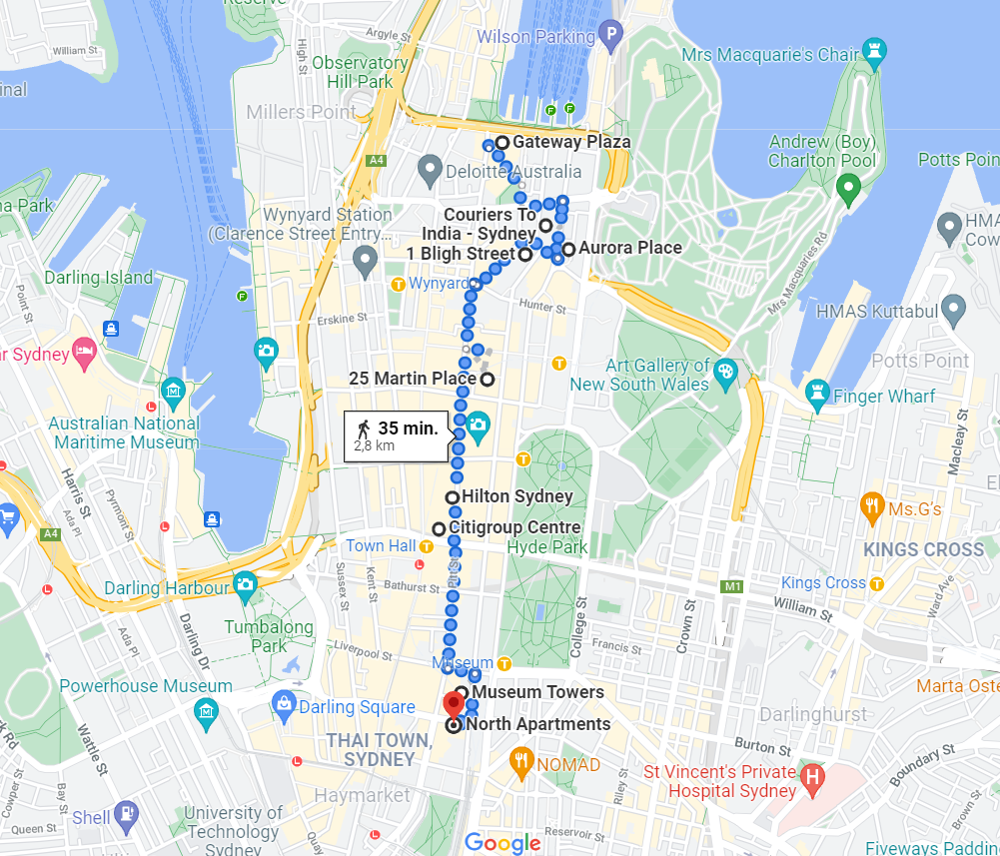

Routes

If you want to learn a bit more of the buildings, press the button that say's (photo) to get more information.

START
1. Gateway Plaza
2. Governor Phillip tower
3. Aurora place
4. 1 bligh street
5. 25 martin place
6. Hilton Sydney
7. Citigroup Centre
8. Museum Towers
9. North Apartments
END
Previous route